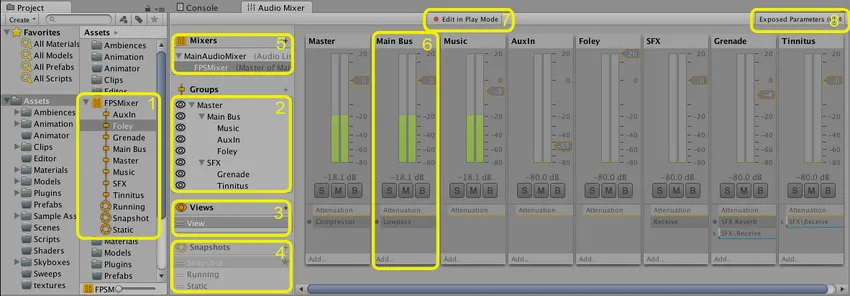
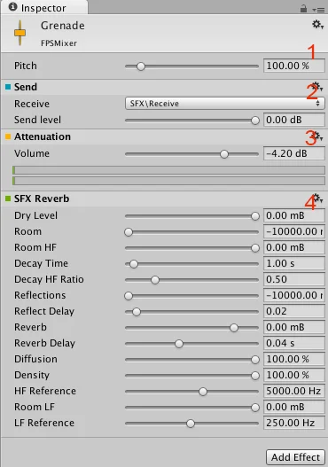
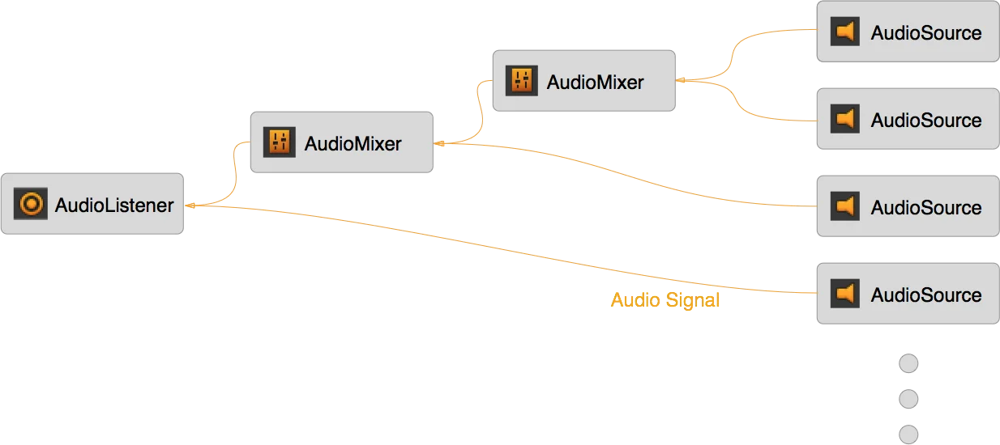
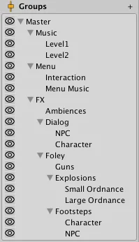

The Audio Mixer is an asset that Audio Sources reference to apply complex routing and mixing to the audio signal they generate. The Audio Mixer performs this category-based mixing through a hierarchy of groups that you construct inside the asset.
You can apply digital signal processing (DSP) effects and other audio mastering to the signal as Unity routes it from the Audio Source to the Audio Listener.

The Audio Mixer window contains the following areas:

The Audio Mixer Inspector displays the configurable components of a group:
Audio routing is the process of taking input audio signals and producing one or more output signals. A signal is a continuous stream of digital audio data, which you can break down into digital audio channels, such as stereo or 5.1 (six channels).
You can use the Audio Mixer to perform important audio processing work on these signals. Examples include mixing, applying effects, and attenuation.
With the exception of sends and returns, the Audio Mixer contains groups that accept any number of input signals, mix those signals, and produce exactly one output.

In audio processing, this routing and mixing usually happens independently of the scene graph hierarchy because audio behaves differently from the objects and concepts shown in the scene. You interact with it differently too.
Without an Audio Mixer, the signal that each Audio Source produces (through audio clips, for example) routes directly to the Audio Listener, where Unity mixes all the audio signals at a single point. This mixing happens independently of the scene graph, regardless of where your Audio Sources are in the scene.
An Audio Mixer sits between the Audio Source and the Audio Listener in the audio signal processing chain. It takes the output signal from the Audio Source and performs the routing and mixing operations you want, until Unity outputs all audio to the Audio Listener and plays it through the speakers.
With mixing and routing, you can categorize the audio in your application into the categories you want. After you mix sound into these categories, you can apply effects and other operations to each category as a whole. This is powerful for applying logic changes to sound categories. You also can tweak aspects of the mix to perform what’s known as mastering of the entire soundscape dynamically at runtime.
Some sound concepts relate to the scene graph and the 3D world. The most obvious examples are attenuation based on 3D distance, relative speed to the Audio Listener, and environmental reverb effects.
Because these operations relate to the scene rather than to the categories of sounds in an Audio Mixer, Unity applies the effects at the Audio Source, before the signal enters an Audio Mixer. For example, Unity applies the distance-based attenuation for an Audio Source to the signal before the signal leaves the Audio Source and routes into an Audio Mixer.
With an Audio Mixer, you can categorize types of sounds and apply operations to those categories. This categorization is important. Without it, every sound plays back equally and without any mixing, and the soundscape becomes difficult to distinguish. With techniques such as ducking (automatically lowering the volume of one category when another plays), categories of sounds can influence each other, which adds richness to the mix.
You might want to perform the following operations on a category:
These categories are application-specific and vary between projects. The following is an example of one such categorization:
The following image shows the category hierarchy of this layout:

The scene graph layout differs significantly from the layout for sound categories.
You can also use mixing and routing to create the immersion you want. For example, you can apply reverb to all the application sounds and attenuate the music to create the feeling of being in a cave.
You can use the Audio Mixer to create moods in your application. With techniques such as snapshots and multiple mixers, your application can transition its mood and evoke the feelings you want the user to experience, which strengthens immersion.
The Audio Mixer controls the overall mix of all the sounds in your application. An Audio Mixer controls the global mix. It’s the static, persistent mix that sound instances route through.
In other words, an Audio Mixer is always present throughout the lifetime of a scene. Unity creates and destroys sound instances as your application runs, and those instances play through these global Audio Mixers.
Snapshots capture the state of an Audio Mixer and transition between those states as your application runs. Use snapshots to define moods or themes for the mix and change those moods as the user progresses through your application.
Snapshots capture the values of all the parameters in the Audio Mixer:
Combine snapshots with application logic to change many aspects of the soundscape.